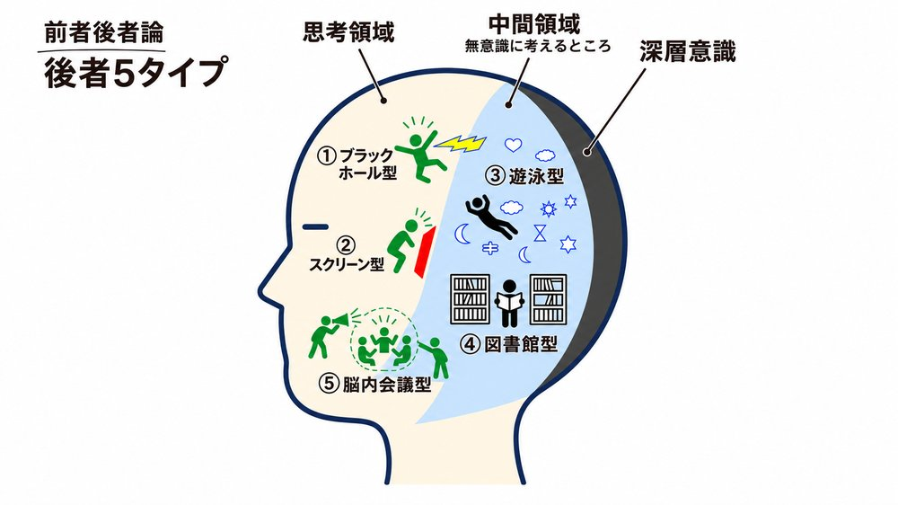

脳タイプ9について

前者後者の先にある、さらに具体的な仕組み。使用領域とスタイルの違いで、前者は4タイプ・後者は5タイプに分かれます。
前者４タイプ

思考と情報の保存を「内（身体）」と「外（身体の外）」のどちらで行っているかによる、2×2の4タイプ分類。
後者５タイプ

意識のポジションと情報のコントロールのあり方による、5つの大枠パターン。
サブタイプ
まだ前者・後者を確認していない方は
▶ 前者後者 簡易診断へ
▶ 前者後者 簡易診断へ